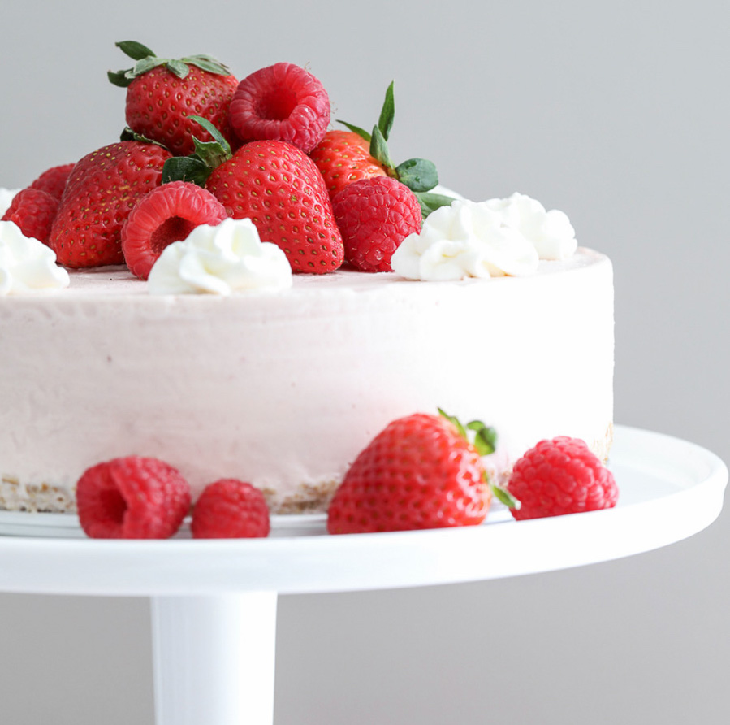
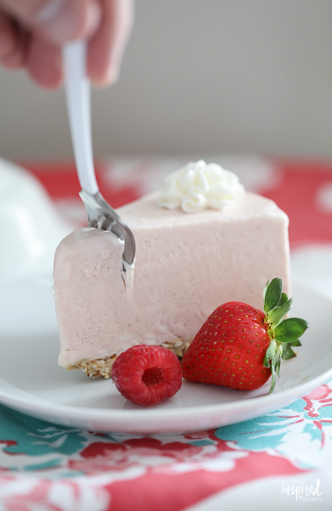
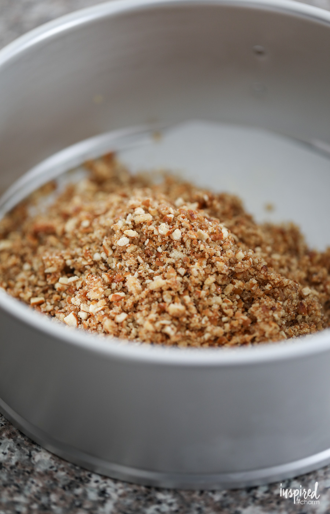
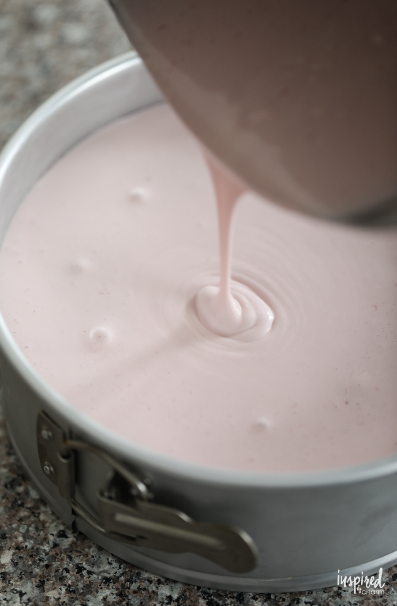
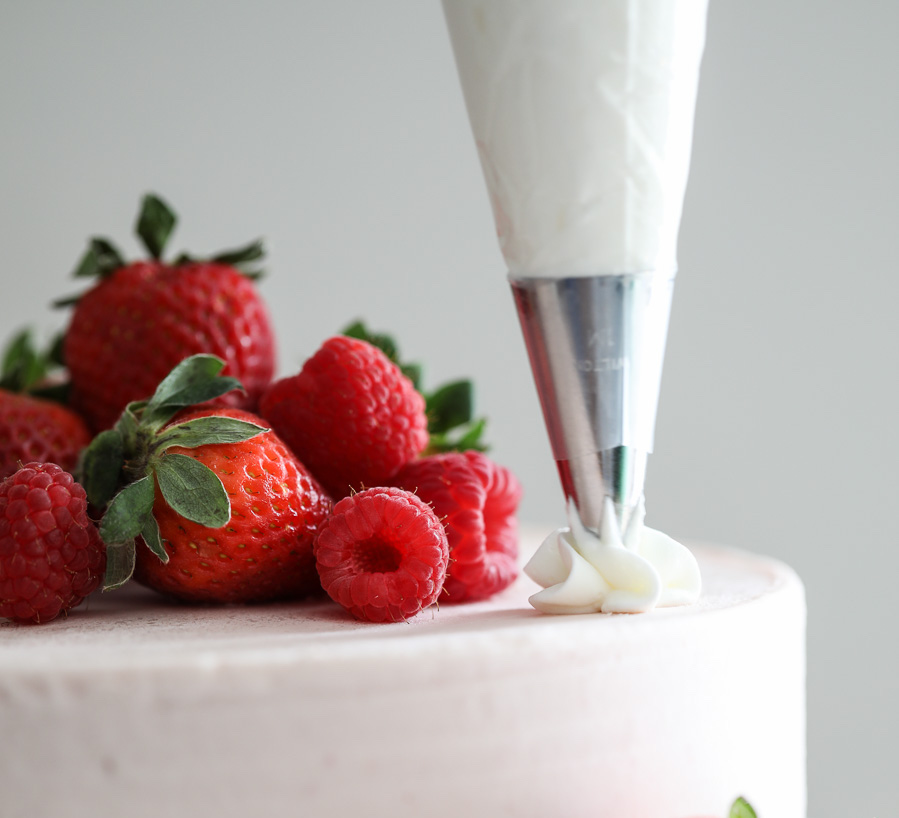

Strawberry Ice Cream Cheesecake
prep time: 20 mins
What will it be - cheesecake or ice cream? You can have both with this Strawberry Ice Cream Cheesecake! Rich, tangy, sweet, and creamy, this delicious dessert recipe is perfect relaxing on the weekends!
The filling consists of cream cheese, ice cream, and strawberry puree. You’ll make the puree first. You can use fresh or frozen strawberries, depending on what’s available. If you’re not a fan of strawberries, use blueberries, blackberries, peaches, or another fruit that you like. I prefer strawberries because they are delicious and give this cheesecake a beautiful pink hue.
The base of the cheesecake filling is the cream cheese and ice cream. The ice cream should be close to room temperature so it’s soft and almost runny. If it’s too cold, it will chill your cream cheese and prevent proper blending.
Ingredients
Cheesecake Filling:
- 2 cups fresh or frozen (thawed) strawberries
- 1 cup sugar
- 18 ounces cream cheese softened
- 1.5 quart vanilla ice cream softened
- Additional berries plus whipped cream for garnish
Pretzel Crust:
- 2 cups small pretzels
- 2 tablespoons brown sugar
- 1/4 cups unsalted butter melted 
Instructions
- Begin by lining the bottom of an 8-inch springform pan with parchment paper. Set aside.
- Place the pretzels in a food processor. Pulse until they resemble sand. (Alternatively, you can place the pretzels in a plastic sealable plastic bag and smash them repeatedly with a rolling pin.) 
- Add the finely crushed pretzels, brown sugar, and melted butter to a bowl. Stir to combine. Spoon this mixture into the prepared springform pan and press the mixture down with your fingers to form an even layer of crust. Freeze for 30 minutes. 
- Place the strawberries in a small saucepan over medium heat. Cook for 3-5 minutes or until the berries start to break down. You can speed up the process by crushing the berries with the back of a spoon. Remove the cooked strawberries from heat and strain them through a fine sieve into a bowl. Use a spatula or a spoon to push through as much of the liquid as possible. Discard the leftover pulp from the sieve. Set aside the strawberry liquid to cool.
- Beat the cream cheese and sugar in a large bowl until well-blended. Add the ice cream and mix well. Fold in the strawberry puree.
- Pour this mixture over the prepared crust and freeze the cheesecake for 4 hours or until firm.
- Remove the cheesecake from the freezer about 30 minutes before serving. Garnish with fresh berries and whipped cream. 
You did it!